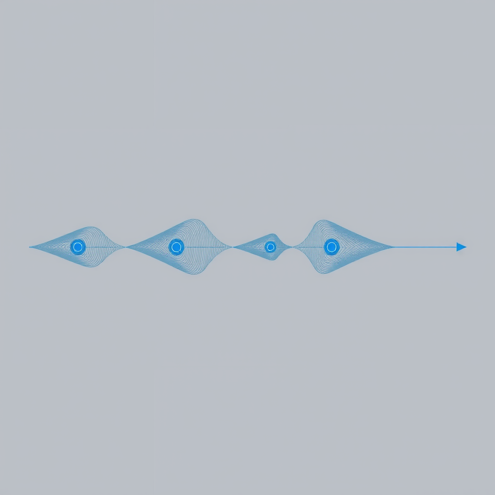
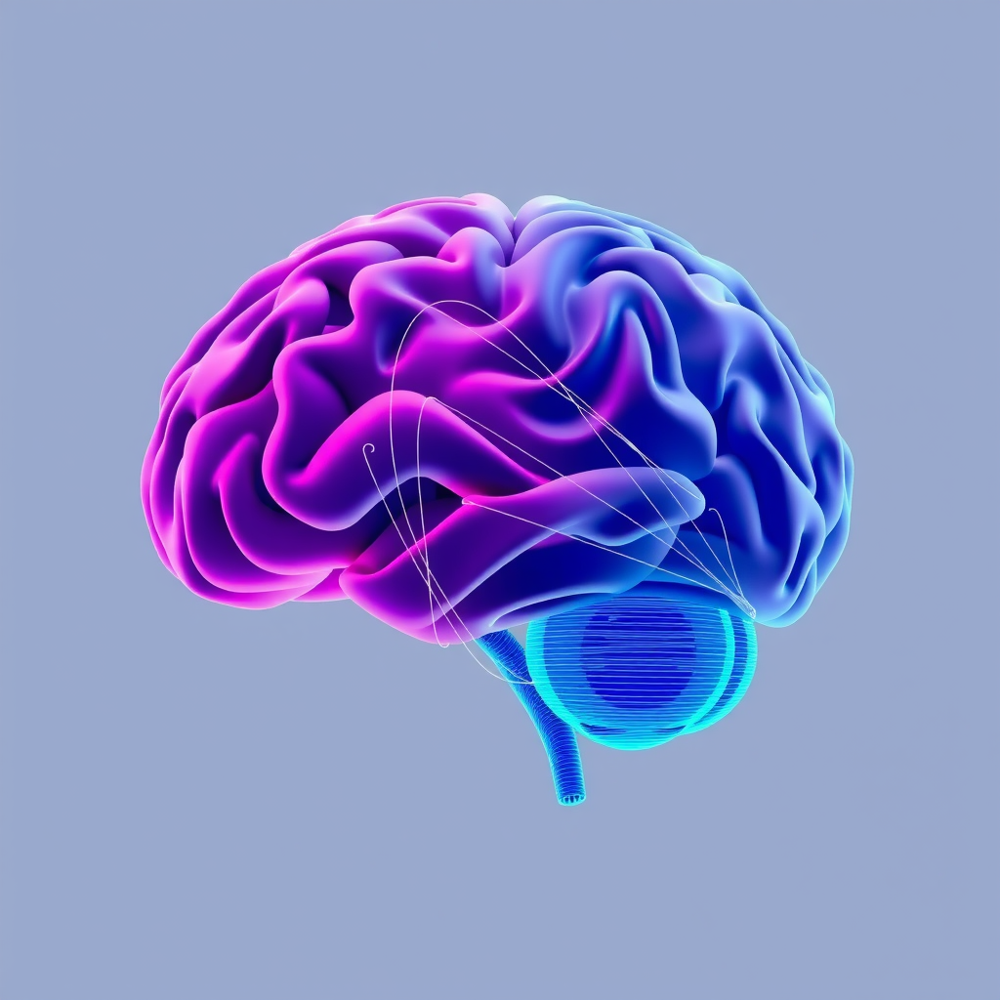

Subconscious Construction: The Hidden Builder of Daily Decisions

Every moment of conscious awareness is preceded by an invisible architecture—a subconscious construction process that shapes our decisions, judgments, and responses before we even realize we're making them. This hidden builder operates in the shadows of cognition, assembling the framework of our daily choices with remarkable precision and speed.
The Architecture of Unconscious Processing
The human brain processes approximately 11 million bits of information per second, yet our conscious mind can only handle about 40 to 50 bits. This staggering disparity reveals a fundamental truth: the vast majority of our cognitive work happens beneath the surface of awareness. The subconscious mind acts as an intelligent creation system, filtering, organizing, and constructing responses to the world around us without requiring conscious oversight.
This digital architecture of thought operates through complex neural networks that have been refined over millions of years of evolution. Like an advanced algorithm running in the background, our subconscious continuously evaluates patterns, assesses threats, identifies opportunities, and prepares responses—all before conscious thought enters the picture.
"The subconscious mind is not a passive repository of memories and instincts—it is an active constructor, continuously building the scaffolding upon which conscious experience rests."
The Timeline of Decision Construction
Neuroscientific research has revealed a fascinating timeline in decision-making. Studies using brain imaging technology show that neural activity associated with a decision can be detected up to 10 seconds before a person becomes consciously aware of making that decision. This discovery challenges our intuitive understanding of free will and highlights the subconscious as the primary architect of choice.
The process unfolds in distinct phases. First, the subconscious evaluates environmental cues and internal states, drawing upon vast databases of past experiences and learned patterns. Next, it constructs potential response pathways, weighing each against criteria we may not even consciously recognize. Finally, it presents the "decision" to conscious awareness, often with such seamless integration that we believe we made the choice deliberately.
Pattern Recognition and Predictive Modeling
At the heart of subconscious construction lies sophisticated pattern recognition. Our hidden cognitive systems excel at identifying regularities in the environment, from the subtle body language of a colleague to the complex dynamics of social situations. This capability represents a form of human-machine symbiosis within our own minds—the automatic, computational aspects of cognition working in concert with higher-level conscious processing.
The subconscious doesn't merely recognize patterns; it builds predictive models. When you walk into a familiar room, your subconscious has already constructed expectations about what you'll find there, how people will behave, and what actions you'll need to take. These predictions shape perception itself, filtering what information reaches conscious awareness and how it's interpreted.
Key Mechanisms of Subconscious Construction
-
Priming Effects: Exposure to stimuli influences subsequent behavior without conscious awareness
-
Implicit Memory: Past experiences shape current responses without explicit recollection
-
Heuristic Processing: Mental shortcuts enable rapid decision-making in complex situations
-
Emotional Tagging: Affective responses are constructed before cognitive evaluation occurs
The Role of Emotion in Subconscious Construction
Emotions are not merely reactions to conscious thoughts—they are integral components of the subconscious construction process. The amygdala and other limbic structures evaluate stimuli for emotional significance before cortical areas involved in conscious reasoning become active. This emotional preprocessing colors our perceptions and guides decision-making in ways we rarely acknowledge.
Consider the phenomenon of "gut feelings." These intuitive responses represent the output of sophisticated subconscious processing that integrates vast amounts of information too complex for conscious analysis. The feeling of unease about a business deal or the immediate attraction to a potential partner reflects the subconscious mind's assessment, constructed from subtle cues and pattern matches that never reach conscious awareness.
Biases and the Subconscious Blueprint
The subconscious construction process, while remarkably efficient, is not infallible. Cognitive biases represent systematic patterns in how the subconscious builds its models of reality. Confirmation bias, for instance, reflects the subconscious tendency to construct interpretations that align with existing beliefs, filtering out contradictory information before it reaches conscious consideration.
Understanding these biases reveals the architecture of subconscious processing. The availability heuristic shows how the subconscious weights easily recalled information more heavily in its constructions. The anchoring effect demonstrates how initial information disproportionately influences subsequent judgments. These patterns aren't flaws but features—evolutionary adaptations that prioritize speed and efficiency over perfect accuracy.
Consciousness as the Interface
If the subconscious is the hidden builder, consciousness serves as the interface—the user-facing layer of a complex cognitive system. This perspective aligns with theories of consciousness that view it not as the seat of decision-making but as a narrative constructor, creating coherent stories about decisions that have already been made at deeper levels.
This doesn't diminish the importance of conscious thought. Rather, it reveals a sophisticated division of labor. The subconscious handles the heavy computational lifting—processing vast amounts of data, running simulations, and constructing initial responses. Consciousness provides oversight, narrative integration, and the ability to override automatic responses when necessary. This represents a form of intelligent creation, where different cognitive systems collaborate to produce adaptive behavior.
The Subconscious-Conscious Partnership
The relationship between subconscious and conscious processing resembles the collaboration between artificial intelligence systems and human operators—each contributing unique strengths to achieve outcomes neither could accomplish alone.
Subconscious Strengths
- Parallel processing capacity
- Pattern recognition speed
- Emotional integration
- Automatic execution
Conscious Strengths
- Deliberate reasoning
- Novel problem solving
- Override capability
- Narrative integration
Practical Implications for Daily Life
Understanding subconscious construction has profound practical implications. First, it suggests that improving decision-making requires attending to the quality of information and experiences we feed our subconscious systems. Like training a machine learning model, we can shape our subconscious processing through deliberate exposure to diverse perspectives, careful reflection on past decisions, and cultivation of beneficial habits.
Second, it highlights the importance of environmental design. Since the subconscious continuously processes contextual cues, structuring our environments—physical, social, and digital—can significantly influence the constructions our subconscious produces. This principle underlies effective habit formation, where environmental triggers automatically activate desired behaviors.
Third, recognizing the subconscious as a constructor rather than a passive repository encourages a more nuanced approach to self-understanding. Rather than viewing ourselves as purely rational agents occasionally disrupted by irrational impulses, we can appreciate the sophisticated intelligence of subconscious processing while remaining aware of its limitations and biases.
The Future of Understanding
As neuroscience and cognitive psychology continue to advance, our understanding of subconscious construction deepens. Emerging technologies like real-time brain imaging and computational modeling are revealing the intricate mechanisms through which the hidden builder operates. This knowledge promises not only theoretical insights but practical applications in education, therapy, and human performance optimization.
The concept of human-machine symbiosis takes on new meaning when we recognize that such symbiosis already exists within our own minds. The subconscious operates with machine-like efficiency and computational power, while consciousness provides the flexibility and creativity characteristic of human intelligence. Understanding this internal partnership may inform how we design external partnerships with artificial intelligence systems.
Conclusion: Embracing the Hidden Builder
The subconscious mind is not a mysterious black box but a sophisticated constructor, continuously building the framework of our experience. By understanding its operations—its strengths, limitations, and mechanisms—we gain insight into the fundamental architecture of human cognition. This understanding doesn't diminish human agency but enriches it, revealing the complex interplay between automatic and deliberate processes that characterizes intelligent behavior.
Every decision we make, every judgment we form, every response we generate emerges from this hidden construction process. Rather than viewing this as a limitation, we can appreciate it as a remarkable feat of biological engineering—a system that enables us to navigate complex environments with speed and efficiency while maintaining the capacity for reflection and deliberate choice.
The silent architect works tirelessly, building the foundation of our conscious experience. By acknowledging its presence and understanding its methods, we become better equipped to collaborate with this hidden builder, shaping not just our conscious thoughts but the very processes that construct them. In this partnership between conscious and subconscious, between deliberate and automatic, lies the full expression of human intelligence—a testament to the elegant complexity of the mind that builds itself.